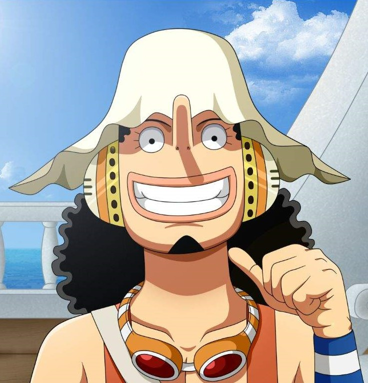

Monkey D. Luffy
Capitán de los Sombrero de Paja, comió accidentalmente la Gomu Gomu no mi
y es un hombre de goma, su meta ser el Rey de los Piratas
Roronoa Zoro
Es un antiguo cazarrecompensas y espadachín el primero en unirse a la banda y convirtiendose
en el vicecapitán. Su sueño es convertirse en el mejor espadachín del mundo

Usopp
Es el francotirador de los Piratas de Sombrero de Paja, siempre quiso ser Pirata
su sueño es ser un valeroso guerrero del mar como su padre.
Vinsmoke Sanji
Conocido como un cocinero experto y por las fuerzas de sus piernas por lo cual se apoda
pierna negra, se unió a Luffy con el fin de encontrar el All Blue
Nami
Es la navegante y cartógrafa de los Piratas del Sombrero de Paja,
ahora su sueño es hacer un mapa del mundo entero.
Tony Tony Chopper
Originalmente es un reno, pero luego de comer la Hito Hito no mi se convirtió en reno humano. Se desempeña
como el médico de la tripulación, pero además de esto también ha demostrado ser un guerrero muy capaz
Nico Robin
Se unió a Luffy creyendo que viajando con él podría descubrir la verdad del Siglo Vacío, convirtiéndose así en la arqueóloga
de la tripulación, comió la Hana Hana no mi que le permite "florecer".
Franky
Es un cyborg (mitad androide, mitad humano), es el carpintero de la tripulación
él es el creador de Thousand Sunny, barco con el cual quiere superar al Oro Jackson del Rey de los Piratas
Brook
Es el músico de los Piratas de Sombrero de Paja y un espadachín. Cuando aún vivía comió
la Yomi Yomi no mi que convierte al consumidor en un humano resucitado, espera reencontrase un día con Laboon su ballena
Jinbe
Es un gyojin tiburón ballena que sirvió antiguamente era el capitán de los Piratas del Sol y
como Shichibukai, actualmente se desempeña como el timonel de los Piratas de Sombrero de Paja